Бухгалтерський супровід бізнесу
Дизайн-система
Кольори, шрифти, кнопки, сітка й рух, з яких складається кожен блок сайту. Усі значення живуть у css/tokens.css, тож зміна в одному місці оновлює весь сайт.
01 / Палітра
Чотири кольори бренду
Синій тримає довіру, помаранчевий веде до дії, беж додає тепла. Натисніть на колір, щоб скопіювати HEX. Поруч контраст за WCAG: для звичайного тексту потрібно щонайменше 4.5:1.
-
Глибокий синій
--brand-navyЗаголовки, логотип, текст на помаранчевому.
- на білому
- 14.2:1
- на світлому фоні
- 12.9:1
-
Білий
--brand-whiteКартки на світлому фоні, текст на темному.
- на темному фоні
- 18.3:1
- на синьому
- 14.2:1
-
Помаранчевий
--brand-orangeГоловна кнопка, лінії, акценти. Дрібний текст на світлому лише відтінком
#B9461A.- синій текст на ньому
- 4.8:1
- як текст на темному
- 6.2:1
- білий текст на ньому
- 2.9:1
-
Теплий беж
--brand-beigeМітки й підписи на темному, теплі деталі. Не для тексту на світлому.
- як текст на темному
- 8.7:1
- як текст на білому
- 2.1:1
Похідні відтінки
Фони взяті з вашого макета, решта розрахована, щоб другорядний текст проходив контраст. Нових кольорів бренду не додаю.
-
--ink-900· Hero, CTA, footer -
--ink-800· картки на темному -
--paper-100· основні секції -
--paper-200· заглиблені зони -
--slate-600· 7.1:1 на світлому -
--slate-300· 8.2:1 на темному -
--orange-700· 4.8:1 на світлому
02 / Теми
Світла і темна секція
Блок не знає конкретних кольорів, він бере --bg, --fg, --accent. Атрибут data-theme="dark" перемикає всю секцію.
01 / Світла
Бухгалтерія — це ваш спокій
Основні секції сайту: послуги, про нас, процес, FAQ.
Glass-поверхня: шапка або одна ключова картка, не більше.
02 / Темна
Бухгалтерія — це ваш спокій
Hero, фінальний заклик і footer: темний фон тримає фокус.
Той самий компонент, інша тема. Жодних змін у коді блоку.
03 / Типографіка
Два шрифти, чіткі ролі
Onest створений українською студією і добре тримає кирилицю. IBM Plex Mono дає мітки й цифри, що асоціюються з точністю обліку. Розміри плавно масштабуються від 360px до 1440px.
Onest · 400–800 · основний
АБВГҐДЕЄЖЗИІЇЙКЛМНОПРСТУФХЦЧШЩЬЮЯ абвгґдеєжзиіїйклмнопрстуфхцчшщьюя
IBM Plex Mono · 400–500 · мітки й цифри
0123456789 ₴ % / — № 31.12.2026
-
Happy Finance
-
Бухгалтерський супровід бізнесу
-
Щомісячний супровід ФОП
-
Бухгалтерія — це не просто документи, які потрібні податковій. Це ваш спокій та безпека зараз і в майбутньому.
-
Спочатку аналізуємо, як зараз працює бізнес. Лише після цього видно вузькі місця і те, що можна автоматизувати, щоб команді було простіше, а власник бачив реальні цифри.
-
03 / Послуги для ФОП
-
Телефон: [ПЛЕЙСХОЛДЕР: телефон]
04 / Кнопки
Одна головна дія на екран
Наведіть курсор: кнопка злегка піднімається, шар заливки проходить зліва направо, стрілка зсувається. Анімуються лише transform і opacity. Спробуйте Tab, щоб побачити фокус.
На всю ширину (мобільний CTA)
Написати в месенджер05 / Сітка, відступи, радіуси
Порядок, який видно
12 колонок, контейнер 1320px, поля від 16px на телефоні до 48px на великому екрані. Відступи кратні 4px. Кути майже гострі: точність замість «мʼякості».
Відступи
sp-2 · 8sp-4 · 16sp-5 · 24sp-6 · 32sp-7 · 48sp-8 · 64sp-9 · 96sp-10 · 128
Радіуси
r-xs · 2 · кольори, міткиr-sm · 4 · кнопкиr-md · 8 · карткиr-lg · 16 · великі панелі
06 / Рух
Спокійно і точно
Три криві на весь сайт. Поява блоків: зсув 24px і прозорість за 1 секунду, з затримкою 80мс між елементами. Якщо в системі ввімкнено «зменшити рух», анімації вимикаються.
-
Поява, hover
--ease-out -
Перехід між станами
--ease-in-out -
Дрібні живі деталі
--ease-spring
07 / Логотип
Вордмарк Happy Finance
Тимчасовий логотип, зібраний з вашого макета: Onest 800 у кривих і помаранчевий квадрат-крапка. Якщо є оригінальний файл, просто замініть SVG у assets/images.
-
logo-stacked-navy.svg
-
logo-stacked-white.svg
-

logo-inline-navy.svg · для шапки
-

logo-inline-white.svg · для футера